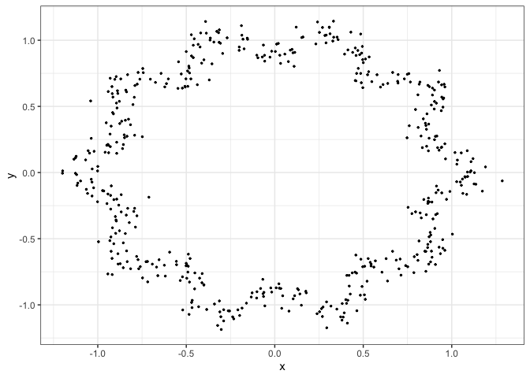
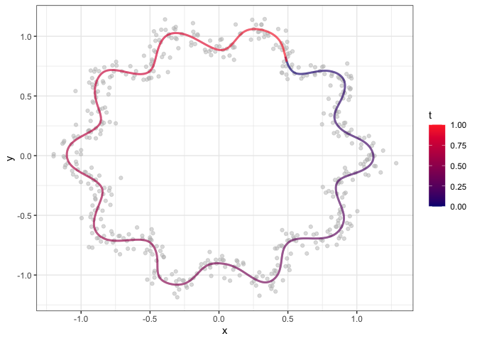
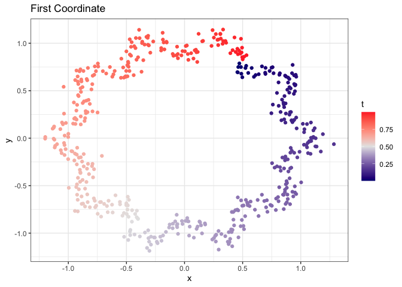
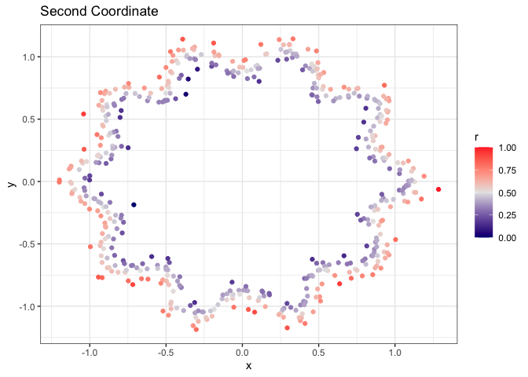
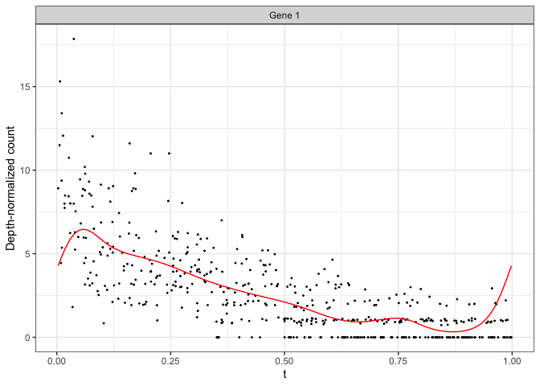
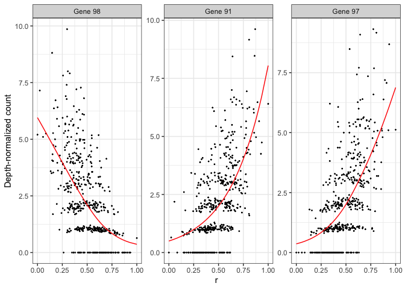

MorphoGAM is an R package that provides statistical tools for modeling spatial gene expression along one-dimensional paths. The workflow has two main steps:
-
CurveFinder()estimates a parametric curve that passes through the tissue coordinates and uses this to define a morphologically relevant coordinate system. -
MorphoGAM()fits generalized additive models (GAM) to find genes that vary along the morphologically relevant curves.
Quick example
The following simulated example illustrates the use of the two main functions. First, create two-dimensional spatial coordinates:
set.seed(1)
library(MorphoGAM)
library(ggplot2)
library(dplyr)
theta <- seq(0, 2 * pi, length.out = 500)
r <- 1 + 0.12 * cos(10 * theta)
xy <- cbind(
x = r * cos(theta) + rnorm(n = 500, sd = 0.05),
y = r * sin(theta) + rnorm(n = 500, sd = 0.05)
)
data.frame(x=xy[,1], y=xy[,2]) |> ggplot(aes(x=x,y=y)) +
geom_point(size=0.5) + theme_bw()
Because the tissue structure is implicitly one-dimensional, MorphoGAM can be applied to extract t and r coordinates.
Step 1: estimate morphologically relevant coordinates
CurveFinder() takes an n × 2 matrix or data frame of spatial coordinates and returns the fitted curve together with the t and r coordinates.
Because the tissue structure is better modeled with a closed curve, we set loop=TRUE (setting loop=FALSE fits an open curve). knn="auto" uses a model selection procedure to choose the best value of k. Alternatively, the user can try several values of k and choose the one that works the best.
The curve_fit model contains several results and plots:



head(curve_fit$xyt) # Data frame containing t and r values
## x y t r f1 f2
## 1 1.088677 0.0038651561 0.1592801 0.3899089 1.119955 -0.002127164
## 2 1.128143 -0.0007532266 0.1598151 0.5150007 1.120189 -0.005964799
## 3 1.074080 -0.0310553225 0.1648627 0.3557088 1.116111 -0.040833073
## 4 1.190511 0.0425426878 0.1547459 0.7225128 1.113303 0.030669298
## 5 1.120173 0.1052161516 0.1471814 0.6108764 1.085859 0.082398755
## 6 1.053796 0.1487169978 0.1370237 0.5826982 1.025142 0.134717329Note that CurveFinderInteractive() opens a shiny app that allows the user to hand-draw the curve.
Step 2: model gene expression along the curve
MorphoGAM() takes as input a n × p counts matrix Y. Here, we will generate a synthetic counts matrix Y with one gene with variation in the t direction and 99 with variation in the r direction:
n_locations <- nrow(xy)
n_genes <- 100
Y <- matrix(0L, nrow = n_genes, ncol = n_locations)
# Gene 1 varies along t
eta_t <- log(2) - 3 * (curve_fit$xyt$t - 0.5)
Y[1, ] <- rpois(n_locations, lambda = exp(eta_t))
# Genes 2–100 vary along r, with different directions and effect sizes
r_effect <- rep(c(-1, 1), length.out = n_genes - 1) *
seq(1, 3, length.out = n_genes - 1)
eta_r <- log(2) +
outer(r_effect, curve_fit$xyt$r - 0.5)
Y[2:n_genes, ] <- matrix(
rpois(length(eta_r), lambda = exp(eta_r)),
nrow = n_genes - 1
)
rownames(Y) <- paste("Gene", seq_len(n_genes))Now we can apply MorphoGAM() to fit a generalized additive model to each gene:
mgam <- MorphoGAM(
Y,
curve.fit = curve_fit,
design = y ~ s(t, bs = "cc") + s(r, bs="cr"),
min.count.per.gene = 10,
return.fx = TRUE
)Note that design = y ~ s(t, bs = "cc") + s(r, bs="cr") fits a model including a smooth term for both the t and r coordinate. We use bs=cc to fit a periodic function in the t direction. Common other choices include:
# Variation only along the fitted curve
design <- y ~ s(t, bs = "cr")
# Variation only orthogonal to the fitted curve
design <- y ~ s(r, bs = "cr")
# Both directions
design <- y ~ s(t, bs = "cr") + s(r, bs = "cr")
# A non-periodic smooth for a closed curve, with orthogonal variation
design <- y ~ s(t, bs = "cr") + s(r, bs="cr")MorphoGAM provides a results data frame that contains each gene as well as some summaries of the estimated function.
-
peak.tis the maximum height of the fitted function for t on the log scale. -
range.tis the range of the fitted function for t on the scale of the counts. -
peak.randrange.rare the equivalent for the fitted function in the r direction. -
pv.tandpv.rare the corresponding p-values for the null hypothesis that the function is 0.
For example, if we wanted to find a gene that varied the most in the t direction, we could sort by genes with the largest peak.t:
mgam$results |> arrange(desc(peak.t)) |> head()
## peak.t range.t pv.t peak.r range.r pv.r intercept
## Gene 1 1.49356467 5.20632298 0.000000000 0.01774403 0.04714376 0.07312087 -4.681794
## Gene 38 0.06456097 0.16319422 0.001556038 0.58659871 1.62485505 0.00000000 -4.618577
## Gene 24 0.03933418 0.08120660 0.018316422 0.55740478 1.28201140 0.00000000 -4.641936
## Gene 80 0.03422020 0.12947207 0.003950135 0.80710312 2.68462271 0.00000000 -4.600510
## Gene 97 0.02798697 0.06438621 0.009632596 1.24001522 4.81096313 0.00000000 -4.728496
## Gene 91 0.02058071 0.05162055 0.015191861 1.27260655 6.30931200 0.00000000 -4.690288As expected, we identify gene 1, which was the one simulated to have significant variation in the t direction.
We can visualize using MorphoGAM’s plotting function:

We can then repeat this for the top genes in the r direction,
r_sort <- mgam$results |> arrange(desc(peak.r)) |> rownames()
MorphoGAM::plotGAMestimates(Y,
mgam_object=mgam,
type="r",
genes=r_sort[1:3], curve_fit=curve_fit)